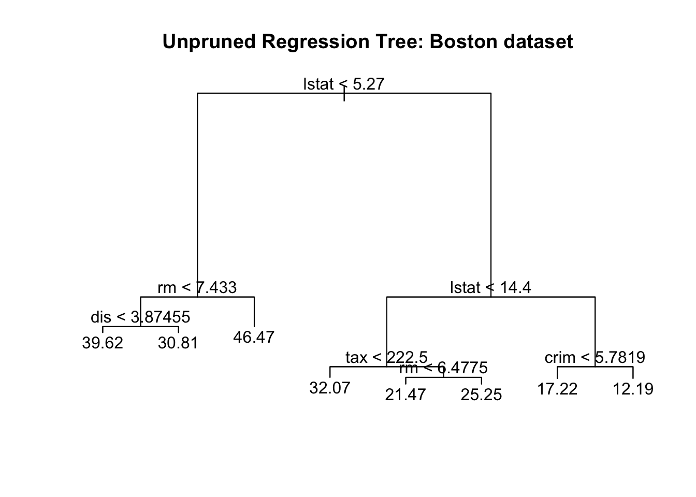
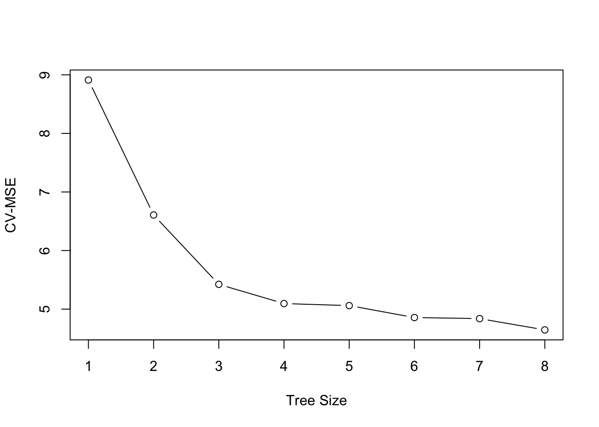
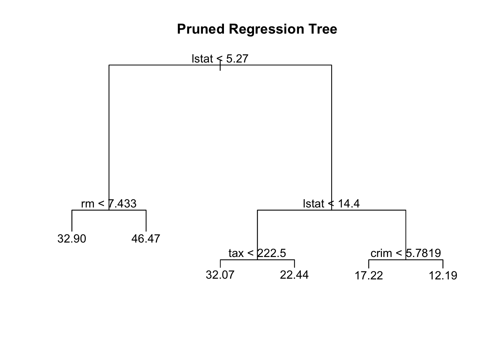
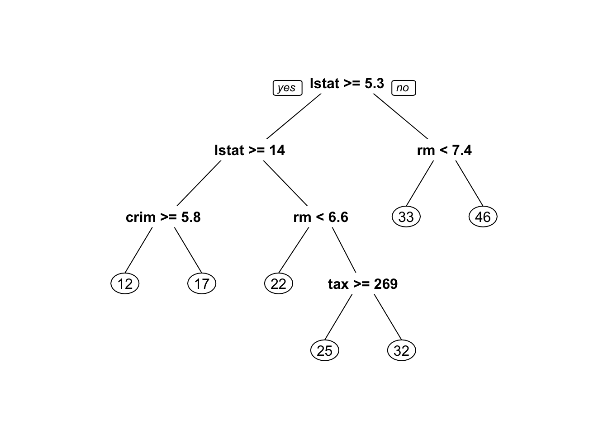
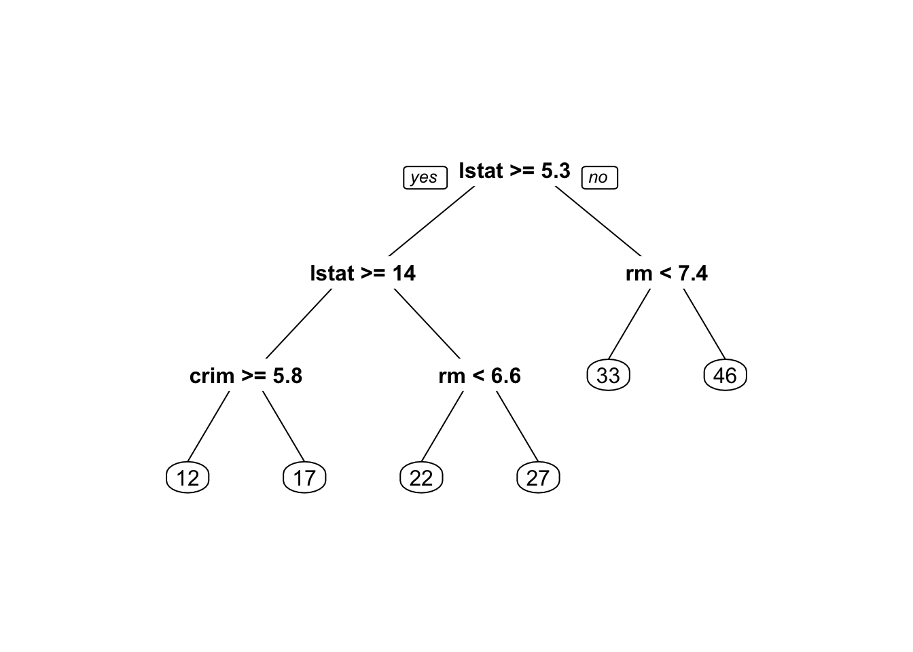
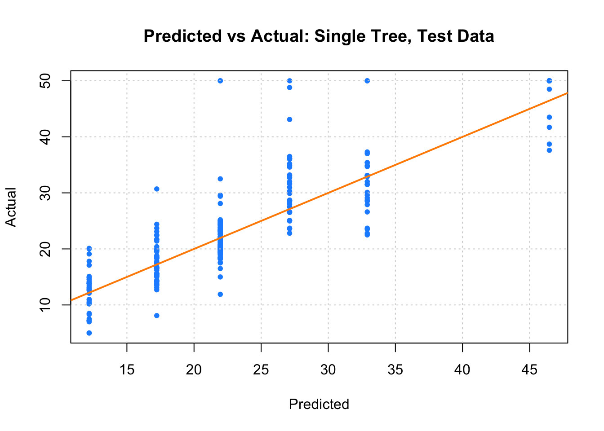

library(MASS)我们仍以 Boston 数据集为例来演示树方法, 先加载包 MASS.
library(MASS)你可以运行 ?MASS::Boston 来回顾关于 Boston 数据集的说明.
tree 包tree 包提供的 tree 函数, 可用于构建回归树.
library(tree)我们随机抽取一半的数据作为训练集, 并用训练集中的数据来”种树” (fit the tree).
set.seed(18)
boston_idx <- sample(1:nrow(Boston), nrow(Boston) / 2)
boston_trn = Boston[boston_idx,]
boston_tst = Boston[-boston_idx,]
boston_tree <- tree(medv ~ ., data = boston_trn)函数 tree 的使用方法和我们熟悉的 lm 函数基本一致, 我们这里只用到了两个参数:
medv ~ .: 指定回归公式, 这里的被预测变量是房价 medv, 点号 . 说明其它的所有变量均被用于预测 medv
data = boston_trn: 指定训练集
所有的回归信息都储存在变量 boston_tree 中,
summary(boston_tree)
Regression tree:
tree(formula = medv ~ ., data = boston_trn)
Variables actually used in tree construction:
[1] "lstat" "rm" "dis" "tax" "crim"
Number of terminal nodes: 8
Residual mean deviance: 12.2 = 2988 / 245
Distribution of residuals:
Min. 1st Qu. Median Mean 3rd Qu. Max.
-10.25000 -2.35500 -0.06778 0.00000 1.87700 15.31000 summary 函数的输出, 说明我们只用到了5个变量来种树, 重要性由高到低依次为: 社区富裕程度 (lstat, 值越小表示社区越富裕), 房间数 (rm), 到市中心距离 (dis), 房产税 (tax), 犯罪率 (crim).我们仍然用 plot 函数来画这棵树:
plot(boston_tree)
text(boston_tree, pretty = 0)
title(main = "Unpruned Regression Tree: Boston dataset")
我们使用交叉验证来剪枝 (i.e., 挑选子树). 我们直接使用 cv.tree 函数来进行交叉验证:
boston_tree_cv = cv.tree(boston_tree)
plot(boston_tree_cv$size, sqrt(boston_tree_cv$dev / nrow(boston_trn)), type = "b",
xlab = "Tree Size", ylab = "CV-MSE")
上图说明:
我们使用 prune.tree 函数来进行剪枝:
boston_tree_prune = prune.tree(boston_tree, best = 6)
summary(boston_tree_prune)
Regression tree:
snip.tree(tree = boston_tree, nodes = c(4L, 13L))
Variables actually used in tree construction:
[1] "lstat" "rm" "tax" "crim"
Number of terminal nodes: 6
Residual mean deviance: 14.64 = 3615 / 247
Distribution of residuals:
Min. 1st Qu. Median Mean 3rd Qu. Max.
-10.220 -2.438 -0.238 0.000 1.877 17.100 plot(boston_tree_prune)
text(boston_tree_prune, pretty = 0)
title(main = "Pruned Regression Tree")
rpart 包当我们使用tree 包来构建回归树时, 基本流程和之前的线性模型基本一致. 此外, tree 包提供的函数 cv.tree 和 prune.tree 使用十分方便, 适合用来快速构建回归树.
除了 tree 包外, 你还可以 rpart 包来构建回归树. rpart 包的功能更强大, 提供了更多关于成本复杂性和交叉验证的参数选项. 如果你需要对模型参数进行更精细的控制, 建议使用 rpart 包.
rpart 的全名是 “Recursive Partitioning And Regression Trees”.
library(rpart)使用 rpart 函数来种树:
boston_tree = rpart(medv ~ ., data = boston_trn)
# summary(boston_tree)我们使用rpart.plot包中的 prp 函数来画树, 它的输出相对更美观:
library(rpart.plot)
prp(boston_tree)
rpart 返回的树 (包含7片叶子)比 tree 返回的树更小.我们使用 prune 函数进行剪枝, 使用 prune 必须制定成本复杂度参数 cp. 对象 boston_tree 中的元素 cptable 已经储存了关于成本复杂度的信息.
min_cp =
boston_tree$cptable[
which.min(boston_tree$cptable[,"xerror"]),
"CP"]
min_cp[1] 0.01419376指定参数 min_cp 来进行剪枝:
boston_tree_prune = prune(boston_tree, cp=min_cp)
prp(boston_tree_prune)
最后, 我们用 predict 函数来考察剪枝后的树 boston_tree_prune 的预测能力, 并和实际值对比:
boston_tree_tst_pred = predict(boston_tree_prune, newdata = boston_tst)
plot(boston_tree_tst_pred, boston_tst$medv,
xlab = "Predicted", ylab = "Actual",
main = "Predicted vs Actual: Single Tree, Test Data",
col = "dodgerblue", pch = 20)
grid()
abline(0, 1, col = "darkorange", lwd = 2)
计算测试集上的 MSE:
mean((boston_tree_tst_pred - boston_tst$medv)^2)[1] 28.01575